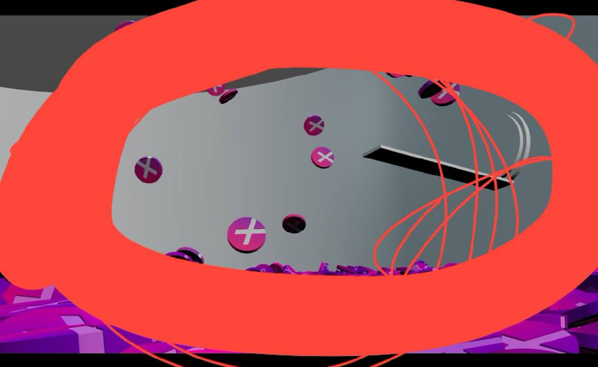
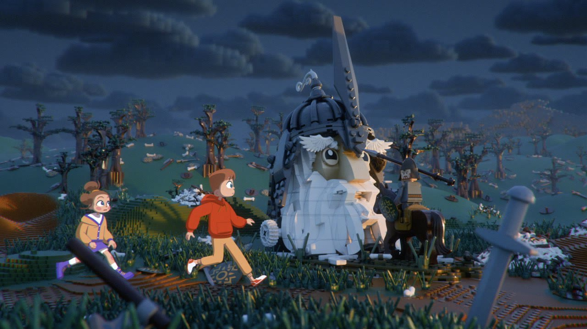
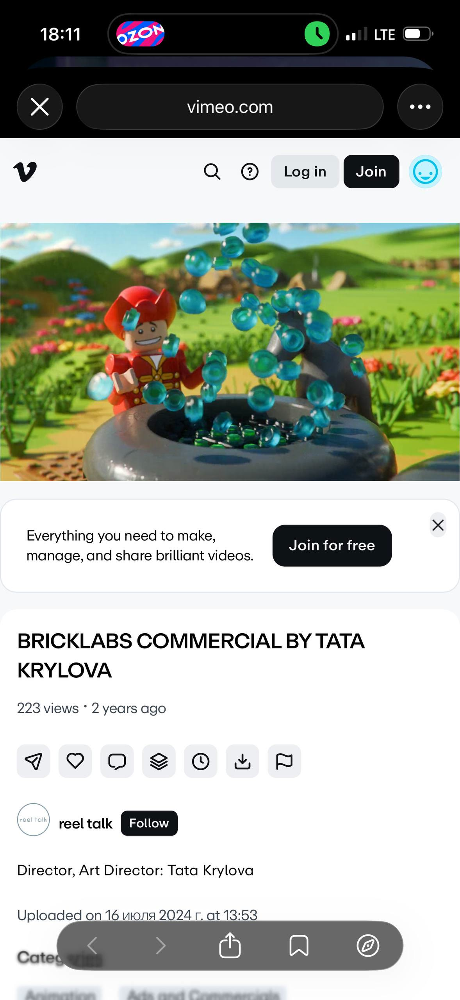

Тимур, preview v008 · 2 с · 25 fps
0040 Прыжок в хранилище
Статус
Анимация ежа и бульк монет готовы, камера финальная. Тимур ждёт ок, чтобы делать свет. Тата: монеты должны перекрыть кадр по фронту шторкой, падают сверху, как в Bricklabs. Тимур взял.
Что нужно от фона
Хранилище сейчас серый лейаут: стены, потолок, глубина. Обсудим, что берём нейронкой, а что Тимур светит в 3D.


